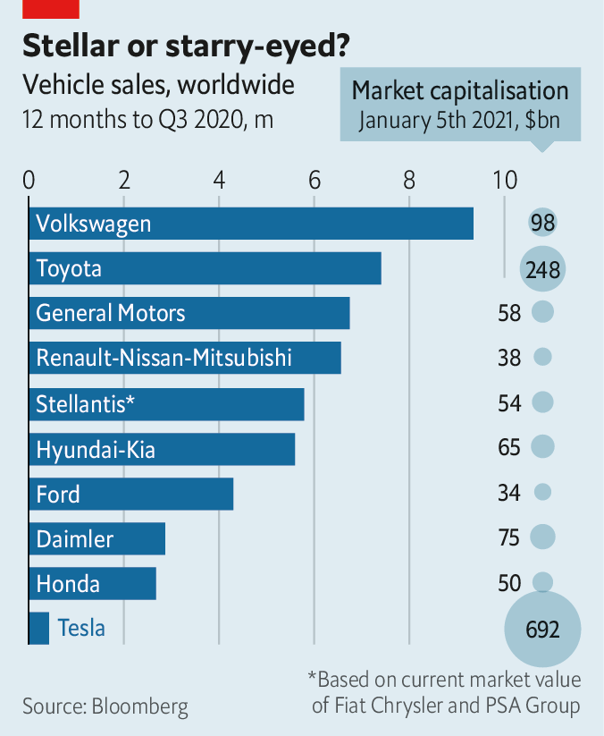

2021-01-31T12:57:18+00:00
Carmaking
汽车制造
汽車製造
A Stellantis is born
繁星联盟诞生
繁星聯盟誕生
A long-awaited mega-merger may give rise to an industry star
一场期待已久的强强联合或将造就行业新星
一場期待已久的強強聯合或將造就行業新星
FIAT CHRYSLER AUTOMOBILES (FCA), an Italian-American carmaker, and PSA Group, the French owner of Citroën and Peugeot, do not like to dwell on their shared past. When PSA acquired Chrysler Europe in 1978 for a nominal $1 it picked up some struggling British and French marques and a heap of debt. That tie-up crashed a few years later with the demise of Talbot, the brand created from these motoring scraps. On January 4th shareholders of both firms voted to give it another go, acceding to a mega-merger agreed in 2019. Hopes seem higher this time. The name of the combined firm, Stellantis, is derived from the Latin for “brightens with stars”.
意大利与美国合资汽车制造商菲亚特克莱斯勒（FCA）和法国汽车制造商标致雪铁龙集团（PSA）不喜欢回顾共同的过往。1978年，PSA用象征性的1美元收购了克莱斯勒的欧洲业务，接手了它一些深陷困境的英国和法国品牌以及巨额债务。几年后，随着用这堆汽车废品创建的品牌塔伯特（Talbot）倒闭，这项合作也宣告失败。1月4日，两家公司的股东投票决定再试一次，同意推进在2019年达成的大型合并协议。这次的期望似乎更高了。合并后的公司名称斯特兰蒂斯（Stellantis）源自拉丁语，意为“用繁星照亮”。
意大利與美國合資汽車製造商菲亞特克萊斯勒（FCA）和法國汽車製造商標緻雪鐵龍集團（PSA）不喜歡回顧共同的過往。1978年，PSA用象徵性的1美元收購了克萊斯勒的歐洲業務，接手了它一些深陷困境的英國和法國品牌以及巨額債務。幾年後，隨着用這堆汽車廢品創建的品牌塔伯特（Talbot）倒閉，這項合作也宣告失敗。1月4日，兩家公司的股東投票決定再試一次，同意推進在2019年達成的大型合并協議。這次的期望似乎更高了。合并後的公司名稱斯特蘭蒂斯（Stellantis）源自拉丁語，意為“用繁星照亮”。
Stardust is sadly lacking from an industry that, along with many others, has taken a beating in the pandemic. But the creation of the world’s fifth-largest carmaker by vehicles produced (see chart) is well set to deal with the effects of covid-19—and to navigate the other difficulties facing the automotive business.
遗憾的是，汽车行业和其他许多行业一道受到疫情重创，星光晦暗。但是，上述协议造就的以产量计全球第五大汽车制造商（见图表）已做好准备应对新冠的影响——以及克服汽车企业面临的其他难关。
遺憾的是，汽車行業和其他許多行業一道受到疫情重創，星光晦暗。但是，上述協議造就的以產量計全球第五大汽車製造商（見圖表）已做好準備應對新冠的影響——以及克服汽車企業面臨的其他難關。

The pandemic has sent screeching into reverse an industry that was already going backwards, as demand slumped in car-mad China. Annual worldwide sales fell from 94m units in 2017 to 90m in 2019. Covid-19 depressed sales by 15% in 2020, to 76.5m, according to IHS Markit, a data firm.
由于对汽车狂热的中国需求锐减，疫情让这个原本就在倒退的行业雪上加霜。全球年销量从2017年的9400万辆跌至2019年的9000万辆。根据数据公司埃信华迈（IHS Markit）的统计，2020年，疫情导致销量下降了15%，至7650万辆。
由於對汽車狂熱的中國需求銳減，疫情讓這個原本就在倒退的行業雪上加霜。全球年銷量從2017年的9400萬輛跌至2019年的9000萬輛。根據數據公司埃信華邁（IHS Markit）的統計，2020年，疫情導致銷量下降了15%，至7650萬輛。
On the bright side, they are expected to rebound sharply this year. The signs are encouraging. Monthly Chinese sales have exceeded last year’s in the second half of 2020. General Motors has led America’s recovery, with sales up by 5% in the fourth quarter, year on year. And electric vehicles are booming, helping Tesla make good on Elon Musk’s pre-pandemic forecast of delivering 500,000 cars in 2020.
乐观地看，今年销量预计会强势反弹。种种迹象鼓舞人心。2020年下半年，中国月销量已超过上年水平。通用汽车引领了美国的复苏，第四季度销量同比增长5%。而电动汽车的蓬勃发展帮助特斯拉达成了伊隆·马斯克在疫情前预测的目标，在2020年交付了50万辆车。
樂觀地看，今年銷量預計會強勢反彈。種種跡象鼓舞人心。2020年下半年，中國月銷量已超過上年水平。通用汽車引領了美國的復蘇，第四季度銷量同比增長5%。而電動汽車的蓬勃發展幫助特斯拉達成了伊隆·馬斯克在疫情前預測的目標，在2020年交付了50萬輛車。
Despite the rebound, the industry is not likely to get back to its size in 2019 before 2023. What does that mean for Stellantis (whose largest shareholder, Exor, part-owns The Economist’s parent company)? Size will let it spread the costs of new technology. The savings, forecast at €5bn ($6.2bn) a year, are more important than ever while the industry recovers. Cash reserves will be shored up by the decision of FCA’s investors in September to accept a reduction in the special dividend that was part of the deal, by nearly half, to €2.9bn.
尽管行业回暖，但在2023年之前不大可能恢复到2019年的规模。这对斯特兰蒂斯（其最大股东Exor集团部分持有本刊母公司）意味着什么？合并后的规模将会让它摊薄使用新技术的成本。预计每年可由此节省50亿欧元（62亿美元），行业还在复苏，这笔钱比以往任何时候都更重要。FCA的投资者在9月份决定接受将合并协议中拟定的特别股息削减近一半至29亿欧元，这将支撑现金储备。
儘管行業回暖，但在2023年之前不大可能恢復到2019年的規模。這對斯特蘭蒂斯（其最大股東Exor集團部分持有本刊母公司）意味着什麼？合并後的規模將會讓它攤薄使用新技術的成本。預計每年可由此節省50億歐元（62億美元），行業還在復蘇，這筆錢比以往任何時候都更重要。FCA的投資者在9月份決定接受將合并協議中擬定的特別股息削減近一半至29億歐元，這將支撐現金儲備。
Stellantis also has Carlos Tavares. He has already turned round two loss-making firms: PSA, which he has led since 2014, and then Opel, acquired from General Motors in 2017. His task now is to revive the Fiat brand, which is dependent on Europe and was starved of investment after the merger with Chrysler in 2014. Only the ageing 500 supermini is selling well.
斯特兰蒂斯还有唐唯实（Carlos Tavares）。他已经让两家亏损的公司扭转乾坤：先是他自2014年起领导的PSA，后是2017年从通用汽车收购的欧宝（Opel）。他目前的任务是重振菲亚特，这个依赖欧洲的品牌在2014年与克莱斯勒合并后投资严重不足，唯一畅销的产品是陈旧的500微型车。
斯特蘭蒂斯還有唐唯實（Carlos Tavares）。他已經讓兩家虧損的公司扭轉乾坤：先是他自2014年起領導的PSA，後是2017年從通用汽車收購的歐寶（Opel）。他目前的任務是重振菲亞特，這個依賴歐洲的品牌在2014年與克萊斯勒合并後投資嚴重不足，唯一暢銷的產品是陳舊的500微型車。
The reticence of both Mr Tavares and Sergio Marchionne, FCA’s late boss, to rush headlong into electrification may also prove wise. Other carmakers had poured cash into electric cars that did not sell well. Now that they are becoming more popular, Stellantis’s plans, including PSA’s new architecture for electric vehicles due by 2023, have more chance of success.
唐唯实和FCA的已故前老板塞尔吉奥·马尔乔内（Sergio Marchionne）都对一头扎进电气化有所保留，这可能也很明智。其他汽车制造商当初砸钱造电动汽车，但销量并不理想。如今电动汽车越来越受欢迎，斯特兰蒂斯的计划（包括PSA将在2023年前推出新型电动汽车架构）有更大的几率获得成功。
唐唯實和FCA的已故前老闆塞爾吉奧·馬爾喬內（Sergio Marchionne）都對一頭扎進電氣化有所保留，這可能也很明智。其他汽車製造商當初砸錢造電動汽車，但銷量並不理想。如今電動汽車越來越受歡迎，斯特蘭蒂斯的計劃（包括PSA將在2023年前推出新型電動汽車架構）有更大的幾率獲得成功。
The deal also affords the opportunity to reset strategy, says Jefferies, a bank. The firms are strong regionally, PSA in Europe and FCA in America, but lack global clout. Neither has much presence in China. And in an industry where complexity is now a dirty word, Stellantis will have 15 brands. Volkswagen’s 11 are seen as unwieldy.
投行杰富瑞（Jefferies）表示，合并协议还为重新制定战略提供了机会。两家公司都有地区优势：PSA在欧洲，FCA在美国，但它们也都缺乏全球影响力，在中国也没多大存在感。汽车产业如今非常忌讳复杂的结构，而斯特兰蒂斯将有15个品牌。大众有11个品牌就已被视为尾大不掉。
投行傑富瑞（Jefferies）表示，合并協議還為重新制定戰略提供了機會。兩家公司都有地區優勢：PSA在歐洲，FCA在美國，但它們也都缺乏全球影響力，在中國也沒多大存在感。汽車產業如今非常忌諱複雜的結構，而斯特蘭蒂斯將有15個品牌。大眾有11個品牌就已被視為尾大不掉。
Mr Tavares needs to make Jeep a worldwide profit machine like VW’s Audi and Porsche, and to decide what to do about underperforming premium brands. Maserati and Alfa Romeo have defied numerous relaunches to stay peripheral. DS is profitable but has little presence outside France.
唐唯实需要将Jeep打造成像大众的奥迪和保时捷那样的全球盈利机器，并决定要拿表现不佳的高端品牌怎么办。玛莎拉蒂和阿尔法·罗密欧尽管经历多番重新亮相，却依然处于视线边缘。DS虽然有所盈利，但在法国以外影响甚微。
唐唯實需要將Jeep打造成像大眾的奧迪和保時捷那樣的全球盈利機器，並決定要拿表現不佳的高端品牌怎麼辦。瑪莎拉蒂和阿爾法·羅密歐儘管經歷多番重新亮相，卻依然處於視線邊緣。DS雖然有所盈利，但在法國以外影響甚微。
Stellantis’s boss must also overcome the clashes of culture that have brought down many a car-industry merger. Marchionne made FCA work through force of personality and the width of the Atlantic, which let him keep the subsidiaries at arm’s length. Mr Tavares does not have that luxury, or Marchionne’s charisma. But his stellar track record shows he has the character to make it happen.■
斯特兰蒂斯的老板还必须克服曾导致许多车企合并失败的文化冲突。马尔乔内带领FCA获得成功靠的是人格力量和大西洋的宽广，后者让他能与子公司保持一定距离。唐唯实既没有这种优势，也没有马尔乔内的个人魅力。但他闪耀的业绩表明，他有毅力实现目标。
斯特蘭蒂斯的老闆還必須克服曾導致許多車企合并失敗的文化衝突。馬爾喬內帶領FCA獲得成功靠的是人格力量和大西洋的寬廣，後者讓他能與子公司保持一定距離。唐唯實既沒有這種優勢，也沒有馬爾喬內的個人魅力。但他閃耀的業績表明，他有毅力實現目標。